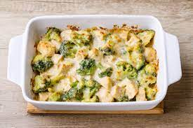

Take it easy with this heart-warming Chicken & Broccoli Casserole
Ingredients:
- 4 Boneless, skinless chicken breasts
- Kosher salt and freshly ground black pepper
- 1 Medium head broccoli, cut into small florets
- 2 Cups cooked white rice
- One 10-ounce can condensed cream of chicken soup
- 1 Cup sour cream
- 1/2 Cup mayonnaise
- 1 Tablespoon lemon juice
- 10 Ounces Cheddar, grated (about 2 1/2 cups)
Directions:
- Preheat the oven to 350 degrees F. Grease a 9-by-13-by-2-inch baking dish with nonstick cooking spray or butter.
- Place the chicken in a large pot with water to cover. Add some salt, bring to a boil, then reduce the heat to a low simmer and cook the chicken until tender, about 45 minutes. Drain the chicken, cover, and refrigerate until cool, or up to 24 hours. Shred.
- Meanwhile, bring a medium pot of generously salted water to a boil. Add the broccoli florets, and boil until crisp-tender, 2 to 3 minutes.
- Spread the rice in an even layer in the baking dish. Make a second layer with the broccoli. In a large bowl, mix the chicken soup, the sour cream, mayonnaise, lemon juice, shredded chicken, half the Cheddar and some salt and pepper. Pour the mixture over the broccoli and top with the remaining Cheddar. Bake for 40 minutes; let stand for 5 minutes before serving.